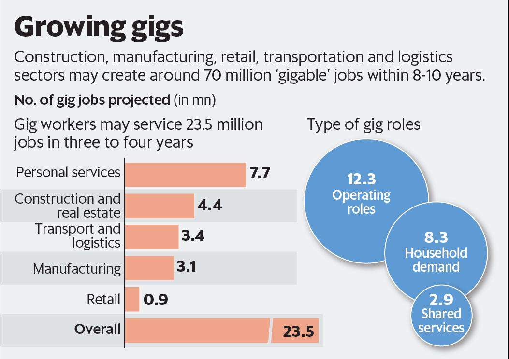
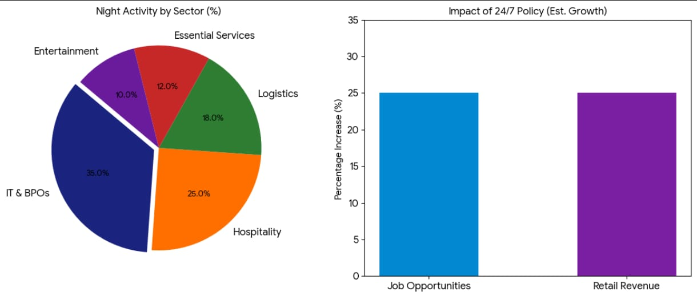

The Rise of India’s Night Economy: Who Works While We Sleep?
At 1:47 AM, a phone lights up in a dark bedroom. Someone taps “Order Again.” Across the city, a delivery rider accepts the request, a restaurant kitchen reopens its burners, and a warehouse scanner beeps to life. A few kilometres away, a headset-wearing executive answers a customer call from another continent. The streets look quiet—but India is wide awake.
Welcome to the country’s booming night economy.
When Night Became Prime Time
A decade ago, most Indian cities slowed down after 10 PM. Markets shut, public transport reduced, and nightlife meant little more than hospitals, security guards, and a few late-night eateries. Today, that rhythm has flipped. Midnight is no longer the end of the day—it’s a second shift.
Food delivery apps like Zomato and Swiggy have quietly reshaped urban life. Late dinners, binge-watching snacks, and post-work cravings have pushed peak order times beyond 9 PM, often stretching into the early morning hours. For many young professionals and students, dinner is now a midnight ritual.
The change didn’t happen overnight. It grew slowly—powered by smartphones, fast internet, and a generation comfortable living beyond the traditional 9-to-5.
Welcome to the country’s booming night economy.
The Gig Workers Who Own the Night
Step out in cities like Delhi, Mumbai, or Bengaluru after midnight and you’ll see the new night workforce in motion. Bikes with glowing delivery boxes zip through empty roads. Ride-hailing cars wait outside railway stations and airports. Convenience stores keep their lights on.
Platforms like Uber and quick-commerce services such as Blinkit thrive after dark. Fewer traffic jams mean faster trips and quicker deliveries, often translating into higher earnings for gig workers.
For many riders and drivers, night shifts offer flexibility. Students earn extra income after classes. Parents work while their children sleep. Some workers even prefer the calm roads and cooler temperatures.
But night work isn’t glamorous. Safety concerns, fatigue, and unpredictable income remain constant challenges. The glowing delivery bag has become a symbol of opportunity—and of uncertainty.
Welcome to the country’s booming night economy.
India’s First Night Owls: BPO Workers
Long before midnight food cravings, India’s night economy had already begun inside glass office towers.
Business Process Outsourcing (BPO) companies pioneered the idea of working while the rest of the country slept. Firms such as TCS and Infosys operate 24×7 to support global clients. When customers in New York or London call a helpline during the day, it’s often the middle of the night in India.
For thousands of young professionals, night shifts opened doors to corporate careers and stable salaries. Entire ecosystems formed around them—night shift allowances, office cab services, and cafeterias serving meals at 3 AM.
Yet the lifestyle came with trade-offs. Sleep schedules flipped, social lives changed, and the body’s natural rhythm had to adapt. Still, the BPO sector proved something powerful: productivity doesn’t depend on daylight.
Welcome to the country’s booming night economy.
Warehouses That Never Sleep
If gig workers are the face of the night economy, warehouses are its hidden engine.
E-commerce giants like Amazon and Flipkart depend heavily on overnight operations. Parcels are sorted, scanned, packed, and loaded onto trucks while cities sleep. By sunrise, thousands of packages are already on their way to doorsteps.
The logic is simple: consumers expect speed. Same-day and next-day delivery promises are only possible because someone is working through the night.
For warehouse employees, night shifts offer steady pay and overtime benefits. But the work is physically demanding and often invisible to customers who click “Buy Now” without thinking about the journey behind the package.
India’s gig economy is set to surge 🚀

India’s night economy is led by IT & BPOs, with a 24×7 policy projected to boost jobs and retail by 25%.

The Lifestyle Shift Driving Demand
The night economy exists because modern lifestyles demand it.
Streaming platforms keep audiences awake longer. Remote work connects teams across time zones. Social media never sleeps. Students study late. Freelancers work with clients abroad. Nighttime has quietly become the most flexible part of the day.
Cities are responding. Late-night cafés, 24×7 gyms, and all-night pharmacies are becoming more common. Airports, metro stations, and highways buzz with activity long after midnight. Urban India is slowly turning into a 24-hour society.
For many young Indians, nighttime is the only quiet window to relax, create, or hustle.
The Human Cost of the 24×7 Life
Behind the convenience lies a serious question: who pays the price?
Night shifts can disrupt sleep cycles, affect mental health, and increase long-term health risks. Gig workers often lack job security and insurance. Safety remains a concern, especially for women working late hours.
Companies have introduced safety policies, emergency helplines, and transportation services. But as the night economy expands, experts say labour laws and urban infrastructure must evolve too.
Better public transport, safe rest areas, healthcare support, and fair wages will be crucial to sustaining this workforce.
A Nation Awake Around the Clock
India’s night economy is no longer a trend—it’s a transformation. The country is quietly shifting toward a 24×7 rhythm where work, entertainment, and services never stop.
The next time a late-night craving is satisfied, a cab arrives in minutes, or a customer support call is answered instantly, pause for a moment.
Somewhere in the city, someone is just starting their day.
While India sleeps, millions are awake—keeping the country moving, one midnight shift at a time.